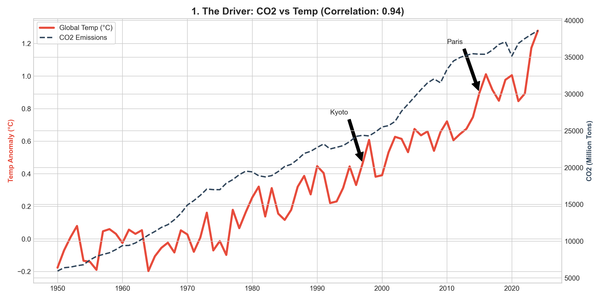
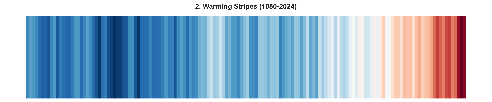
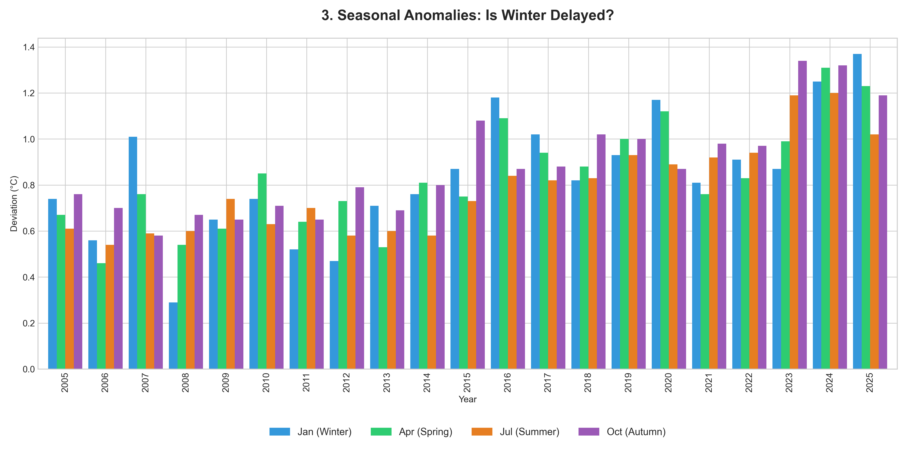
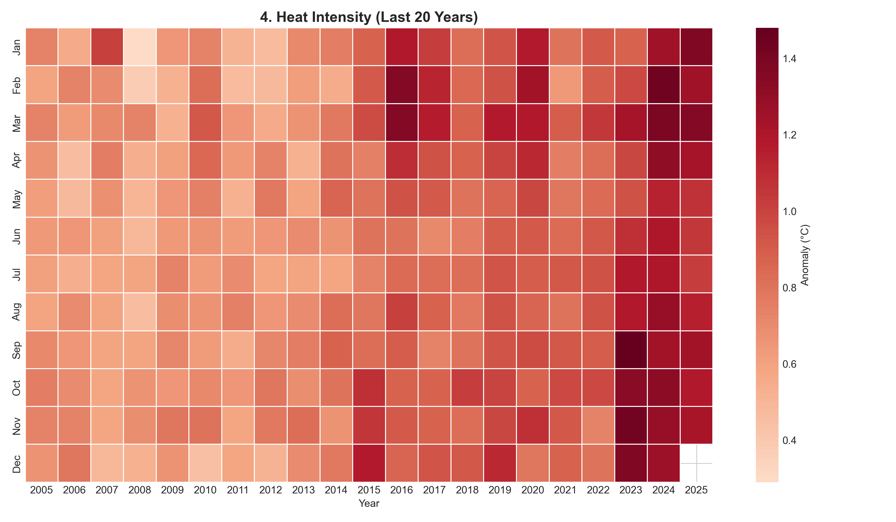

🌍 EcoPulse Climate Analysis
1. The Driver: CO2 & Temperature

📊 Statistical Proof: Correlation Coefficient (R) = 0.94.
Analysis: This chart tells the story of the "Greenhouse Effect." The dashed line represents CO2 emissions, which act like a blanket wrapped around the Earth. As this blanket gets thicker (more emissions), it traps more solar heat, causing the global temperature (red line) to rise. We have marked key events like the Kyoto Protocol (1997) and the Paris Agreement (2015). Despite these political efforts, the data shows that emissions and temperatures are still climbing, reaching record highs in 2023-2024.
2. Visual History (Warming Stripes)

Explanation: Each stripe is a year (1880-2024). The color is determined by the average temperature compared to the 20th-century baseline. Blue means cooler, Red means warmer. The transition to solid dark red on the right visualizes the rapid acceleration of warming.
3. Seasonal Analysis (Autumn Focus)

📊 Insight on Autumn:
Note that Autumn (Purple bars) is consistently showing high anomalies, delaying the arrival of winter.
In the last 20 years, October is 0.89°C warmer on average compared to the historical baseline (1950-1980).
This effectively means "real winter" arrives weeks later than it used to.
• Winter Average Anomaly: +0.84°C
• Summer Average Anomaly: +0.78°C
• Autumn Average Anomaly: +0.88°C.
4. Heat Intensity

📊 Data Check:
In this period, 52 months crossed the extreme threshold of +1.0°C.
Reading the Chart: Years are on the bottom, Months on the left. We removed the numbers to focus on the color intensity.
The Scale: Light orange is warm. Dark Maroon is dangerous heat (> 1.2°C anomaly)
Statistical Analysis:
Out of 252 months analyzed in this period, 52 months exceeded the critical threshold of +1.0°C.
That means 20.6% of the time, we are living in extreme heat conditions relative to history.
🌱 General Ecological Recommendation
🌱 Reduce Meat Consumption: The livestock industry is a major source of methane. Reducing meat intake helps lower global emissions.